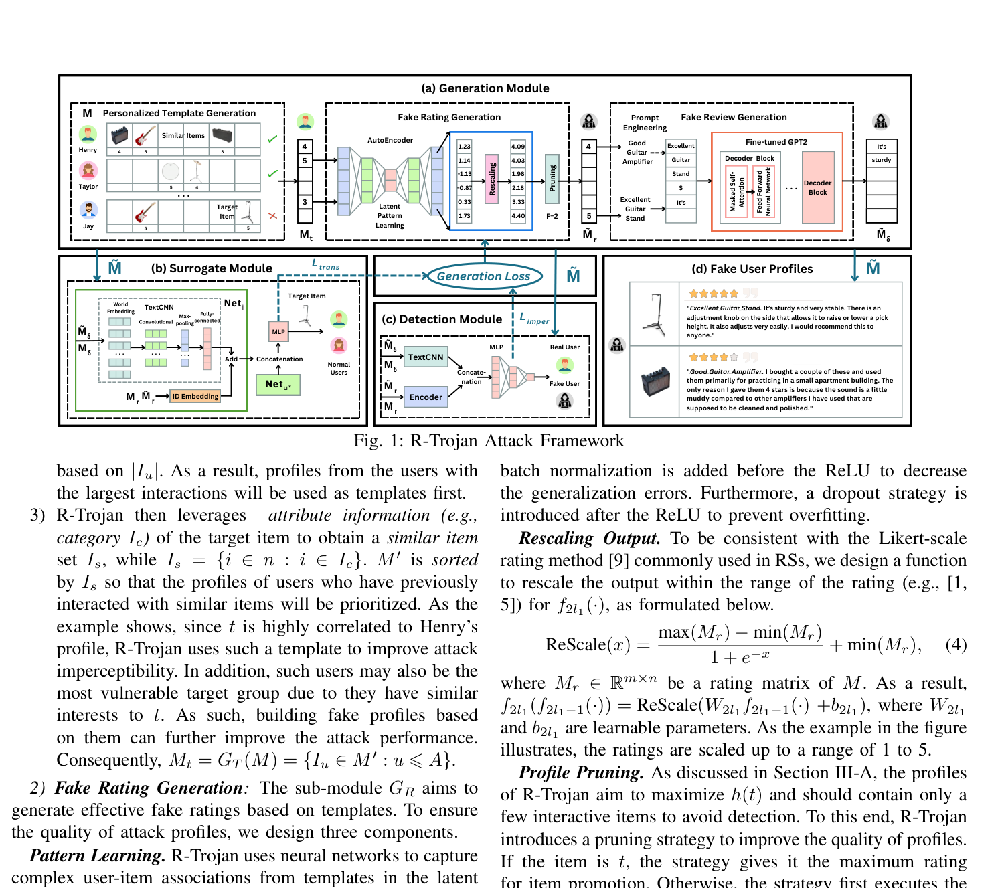

Review-Incorporated Model-Agnostic Profile Injection Attacks on Recommender Systems (融合评论文本的模型无关画像注入攻击)
- 会议/期刊: ICDM 2023
- 作者与机构: Shiyi Yang, Lina Yao, Chen Wang, Xiwei Xu, Liming Zhu (Data61/CSIRO, UNSW, Macquarie University)
- 推荐链路定位: 数据层——训练期投毒（Profile Injection / Shilling Attack），非召回/精排模块
- 研究方向: 去偏公平、可信隐私与工业架构（推荐系统鲁棒性与安全） / 多模态推荐（评论文本融合）
- 论文原文: https://arxiv.org/abs/2402.09023v1
- 开源代码: 暂未开源（文中仅引用 HuggingFace Transformers 作为 GPT-2 依赖）
TL;DR (1分钟核心速览)
现有投毒攻击只能生成纯数值评分画像，在深度推荐器上迁移性差、且极易被伪造画像检测器识别。本文提出 R-Trojan：把商品评论文本作为新的攻击载体，用「个性化模板选择 + AutoEncoder 评分重构 + 微调 GPT-2 评论生成」的生产模块，与「DeepCoNN++ 代理推荐器」和「GAN 判别器」构成双层优化博弈。在 3 个真实数据集、5 个受害推荐器、9 个 SOTA 基线对比下，黑盒 WRMF 上 HR@10 达 0.5530（+15.1%），LightGCN 上最高 +53.8%，且 t-SNE 上伪造画像与真实画像分布高度重叠。
Background & Motivation (背景与核心矛盾)
- 主流范式: 投毒攻击从启发式（Random、Bandwagon）演进到 GAN 生成式（DCGAN、AUSH、RecUP、Leg-UP、TrialAttack），用生成器伪造用户画像注入训练集以抬高/压低目标物品曝光。
- 前人局限: ① 传统启发式与算法特定攻击（PGA 针对矩阵分解）在 NCF/LightGCN 等深度模型上增益近乎消失；② 纯评分画像缺乏语义，检测器仅凭共现模式即可识别，隐蔽性差；③ 追求攻击力而忽略不可见性，实际影响时长受限。
- 核心洞察 (Key Insight): 评论比 Likert 评分携带更丰富的用户偏好语义，且评论天然解释了评分理由；评论型推荐系统（DeepCoNN 类）对伪造评论画像存在未探索的新攻击面。
- 本文切入点: 将文本评论纳入画像生成变量，使伪造画像在「评分 + 语义」双通道上与真实画像同分布，从而同时获得跨模型迁移性和检测器逃逸能力。
Method (核心方法设计)
1. 整体框架 (Overall Architecture)
R-Trojan 将攻击建模为双层优化：下层用受害者训练集 \(\mathbf{M}\)与伪造画像\(\tilde{\mathbf{M}}\)拼接得到的\(\mathbf{M}^*\)，训练代理推荐器参数\(\Theta=\arg\min_\Theta\mathcal{L}_{RS}(\mathbf{M}^*)\)与检测器参数\(\Phi=\arg\max_\Phi\mathcal{L}_{DE}(\mathbf{M}^*)\)；上层固定二者，仅优化\(\tilde{\mathbf{M}}\) 以最大化迁移性并最小化可检测性：
生成模块内部为三级流水线：模板选择 \(\mathbf{M}_t=G_T(\mathbf{M})\)→ 评分重构\(\tilde{\mathbf{M}}_r=G_R(\mathbf{M}_t)\)→ 评论生成\(\tilde{\mathbf{M}}_\delta=G_V(G_R(G_T(\mathbf{M})))\)，其中评论生成以「情感 + 商品名」为提示驱动微调后的 GPT-2。
flowchart TD
A["真实评分矩阵 M + 评论语料"] --> B["个性化模板选择 G_T<br/>剔除已交互 t 的用户→按 |I_u| 与相似品类排序"]
B --> C["AutoEncoder 评分重构 G_R<br/>ReScale 到 [1,5] + 剪枝保留 F-1 个填充项"]
C --> D["Prompt Engineering + 微调 GPT-2 评论生成 G_V"]
D --> E["伪造画像 M̃ = (r̃, δ̃)"]
E --> F["代理推荐器 DeepCoNN++ (下层 min Θ)"]
E --> G["检测器 GAN 判别 (下层 max Φ)"]
E --> H["受害黑盒 RS: WRMF/NCF/LightGCN/DeepCoNN"]
F --> I["L_trans 迁移性损失 (促目标物品进榜)"]
G --> J["L_imper 隐蔽性损失 (骗过判别器)"]
I --> K["上层更新生成模块参数"]
J --> K
K --> B
2. 关键设计拆解 (Key Designs)
-
个性化模板选择（Personalized Template Generation）：随机采样模板会抽出与目标物品 \(t\)毫无兴趣关联的用户（如给「吉他架」选鼓手画像），一眼可疑。R-Trojan 三步筛选：先剔除已与\(t\)交互的用户（避免直接泄露），再按交互丰富度\(|I_u|\)降序，最后按目标物品品类\(I_c\)的相似物品集\(I_s\)优先，即\(\mathbf{M}_t=G_T(\mathbf{M})=\{I_u\in\mathbf{M}':u\le A\}\)。直觉：与\(t\)兴趣同质的真实用户既是「最难被检测」的伪装来源，也是最容易被\(t\) 攻陷的目标群体，一举两得。
-
评分重构与剪枝（ReScale + Profile Pruning）：AutoEncoder 输出无界，用类 Sigmoid 拉伸对齐评分量纲 \(\mathrm{ReScale}(x)=\frac{\max(\mathbf{M}_r)-\min(\mathbf{M}_r)}{1+e^{-x}}+\min(\mathbf{M}_r)\)；剪枝算子给目标物品置最高分，其余物品按重构误差\(|d_{\tilde{u}i}-e_{\tilde{u}i}|\)保留最小的\(F-1\)个，其余置零：\(\mathrm{Pruning}(d_{\tilde{u}i})=\max(\mathbf{M}_r)\)若\(i=t\)，否则\(f_o(d_{\tilde{u}i})\odot f_m(|d_{\tilde{u}i}-e_{\tilde{u}i}|)\)。这既保持真实用户的行为模式（含「挑剔用户」的多样性），又维持伪造画像的稀疏性，避免密集画像触发异常检测。
-
迁移性与隐蔽性损失、训练与推理成本：\(\mathcal{L}_{trans}=\log(\sum_{u\in U_t}\sum_{i\in\hat{I}_u}e^{c(r_{ui}-r_{ut})}+1)\)（当\(t\notin\hat{I}_u\)时，最小化\(t\)与已推荐物品的预测分差；若已进榜则取常数\(C\)），\(\mathcal{L}_{imper}=\frac{1}{A}\sum_{\tilde{u}\in\tilde{m}}\log(1-DE_\Phi(\tilde{\mathbf{M}}_{\tilde{u}}))\)；代理模块用评论文本特征 + ID 嵌入拼接\(o_i=\mathrm{TextCNN}_{\theta_1}(\delta_i)+q_i\)以缓解少评论冷启问题。下层用 BCE 损失（隐式 Top-K 场景），负采样 1:4，Adam、\(\lambda=0.5\)；推理只需一次前向生成\(A\) 个画像，无需访问任何受害模型参数或梯度。
Experimental Setup & Evaluation Protocol (实验设置与评估协议)
- 数据集与预处理: 三个真实数据集，未做
5-core过滤，稀疏度 98.57%–99.62%；每条评论用 300 维预训练词向量编码。
| 数据集 | #Users | #Items | #Reviews | 稀疏度 | 特征/场景说明 |
|---|---|---|---|---|---|
| Amazon Musical Instruments | 1,429 | 900 | 10,261 | 99.20% | 乐器垂类，评测集 |
| Amazon Automotive | 2,928 | 1,835 | 20,473 | 99.62% | 汽车配件垂类，最稀疏 |
| Yelp | 1,599 | 1,318 | 30,120 | 98.57% | 本地生活，随机子采样 |
- 数据划分与防穿越 (Splitting Strategy):
Leave-One-Out，每个用户最后一条交互为测试集，剩余按 9:1 划分训练/验证。 - 排名评测协议 (Ranking Protocol):
Full-Ranking（对全体未交互物品打分排序），报告 HR@10 与 NDCG@10；伪造画像评分在注入前被二值化以适配隐式 Top-K 任务，但隐蔽性评估保留原始显式评分。 - 对比基线与超参设置: 9 个基线（Random、Bandwagon、PGA、DCGAN、AUSH、DLA、RecUP、Leg-UP、TrialAttack）；受害模型含 3 个纯评分黑盒（WRMF、NCF、LightGCN）+ 2 个评论型（DeepCoNN、DeepCoNN++，兼作黑盒/白盒）。默认攻击规模 \(A=3\%\)用户数，\(F\)取数据集的平均用户交互数；\(l_1=l_2=3\)、检测器 2 层、\(d_2=d_3=50\)、\(\lambda=0.5\)、dropout 0.5、batch 256、lr 1e-3、20 epochs。
Key Experimental Results (实验关键数据)
1. 主实验对比 (Main Results)
黑盒设置下 HR@10（\(A=3\%\)；Improv. 相对最强基线）：
| 受害 RS | 数据集 | Random | PGA | DCGAN | AUSH | DLA | Leg-UP | TrialAttack | R-Trojan | Improv. |
|---|---|---|---|---|---|---|---|---|---|---|
| WRMF | Musical | 0.2649 | 0.3904 | 0.3599 | 0.3781 | 0.4383 | 0.4681 | 0.4804 | 0.5530 | +15.1% |
| WRMF | Automotive | 0.1137 | 0.1563 | 0.1695 | 0.1698 | 0.2094 | 0.2305 | 0.2284 | 0.2693 | +16.8% |
| WRMF | Yelp | 0.0939 | 0.1082 | 0.1017 | 0.1231 | 0.1276 | 0.1360 | 0.1464 | 0.1852 | +26.5% |
| NCF | Musical | 0.1495 | 0.1633 | 0.1807 | 0.2068 | 0.2525 | 0.2438 | 0.2714 | 0.3382 | +24.6% |
| NCF | Automotive | 0.1043 | 0.1192 | 0.1383 | 0.1650 | 0.1962 | 0.2038 | 0.2187 | 0.2679 | +22.5% |
| NCF | Yelp | 0.0784 | 0.0848 | 0.0965 | 0.0991 | 0.1159 | 0.1328 | 0.1250 | 0.1729 | +30.2% |
| LightGCN | Musical | 0.0602 | 0.0893 | 0.0972 | 0.1110 | 0.1509 | 0.1437 | 0.1357 | 0.1858 | +23.1% |
| LightGCN | Automotive | 0.0340 | 0.0589 | 0.0433 | 0.0634 | 0.1102 | 0.1088 | 0.1009 | 0.1536 | +39.4% |
| LightGCN | Yelp | 0.0136 | 0.0246 | 0.0317 | 0.0415 | 0.0602 | 0.0544 | 0.0512 | 0.0926 | +53.8% |
NDCG@10 同向领先，增益幅度更大：WRMF/Musical 0.2418→0.3617（+49.6%），NCF/Yelp 0.0851→0.1162（+36.5%），LightGCN/Yelp 0.0359→0.0560（+56.0%），说明本文不只把目标物品挤出榜单边缘，而是显著推高其排名位置。
2. 消融实验 (Ablation Study)
说明：原文未提供组件级消融表（无 w/o review、w/o template 等受控实验），这是本文最明显的实验短板。下面用同源基线做「代理消融」推算，第 3 行起论文完全缺失：
| 消融代理配置 | WRMF/Musical | WRMF/Automotive | LightGCN/Yelp | 解读 |
|---|---|---|---|---|
| 完整 R-Trojan | 0.5530 | 0.2693 | 0.0926 | — |
| w/o 评论文本（≈ Leg-UP，同代理+GAN 但纯评分） | 0.4681 (−15.4%) | 0.2305 (−14.4%) | 0.0544 (−41.3%) | 文本模态是单一最大增益源 |
| w/o 个性化模板（≈ TrialAttack，随机模板+代理） | 0.4804 (−13.1%) | 0.2284 (−15.2%) | 0.0512 (−44.7%) | 模板排序贡献与文本模态相当 |
| w/o 检测模块（\(\lambda=1\)，仅\(\mathcal{L}_{trans}\)） | 未报告 | 未报告 | 未报告 | 隐蔽性—攻击力的 trade-off 曲线缺失 |
| w/o 代理模块（\(A\) 有限下直接攻击） | 未报告 | 未报告 | 未报告 | 与 DLA/AUSH 的对照缺失 |
3. 关键实验发现 (Key Findings)
- 文本模态的增益随受害模型深度递增：同为「GAN + 代理」框架，Leg-UP → R-Trojan 在 WRMF/Musical 上 HR@10 提升 15.4%，而在 LightGCN/Yelp 上提升 41.3%。原因在于图卷积的邻域聚合让伪造用户的高连接度填充项经 2 跳传播放大，语义一致的评论画像使伪造节点更「融进」正常邻域结构。
- 代理模型比生成器架构更决定攻击上限：带代理的 DLA/Leg-UP/TrialAttack 全面优于无代理的 AUSH/RecUP（LightGCN/Automotive：0.1102/0.1088/0.1009 vs 0.0634/0.0735），而专为矩阵分解设计的 PGA 在深度模型上退化到接近 Random（0.0589 vs 0.0340），证实「算法特定毒化 = 零迁移」。
- 攻击规模呈单调正相关但边际递减：图 2 显示 \(A\) 从 0.5% 增至 3% 时 HR@10 持续上升（白盒 DeepCoNN++ 上曲线最陡），说明评论型推荐器在训练阶段对伪造语义注入几乎无免疫，但论文未给出 3% 以上是否饱和的结论。
Highlights & Limitations (亮点、对比与审稿批判)
- 与代表作对比 (vs. Prior Work): 相比 Leg-UP（GAN + 代理模型，但画像仅含评分），本文引入评论文本与个性化模板，在同等 \(A\)/\(F\) 预算下获两位数增益；相比 TrialAttack（代理驱动迁移），本文额外加入检测器做 minimax 博弈以换取隐蔽性；相比 PGA（针对 MF 定制的梯度毒化），本文完全黑盒，不依赖受害模型结构。
- 可迁移亮点: ①「按交互丰富度 + 同品类相似度」排序选模板的策略，可直接迁移到推荐系统的真实用户画像数据增强与高质量负样本构造；② TextCNN 评论特征 + ID 嵌入相加的
o_i = TextCNN(δ_i) + q_i融合，是冷启动/少评论场景下轻量多模态融合的实用范式。 - 审稿级局限批判: ① 无组件消融，文本模态、模板策略、检测器的边际贡献无法解耦，结论只能靠跨论文对比推断；② 隐蔽性评估仅靠 t-SNE 定性，未与工业常用伪造画像检测器（共现异常、图密度异常、评分-评论情感不一致检测）对抗，而本文生成评论由「评分→情感词」硬映射驱动，恰是情感一致性检测的强特征，实战中很可能被轻易识破；③ 生成阶段需微调 GPT-2 并逐画像生成，攻击时间/算力成本完全未量化，与「limited resources」的动机自相矛盾；④ \(F\)、\(\lambda\)、攻击规模仅单点或单曲线，缺乏敏感性分析；⑤ 作为安全研究未提出任何防御缓解方案。
Rating (四维评分)
- 方法创新性 (Novelty): ⭐⭐⭐⭐ （首次将评论文本作为投毒画像的生成载体，把攻击重构成双层优化 + 三模块 Transformer-GAN，攻击面挖掘有新意但生成器本身为成熟组件拼接）
- 评估协议与实验扎实度 (Protocol & Experiments): ⭐⭐⭐ （9 基线 × 5 受害模型 × 3 数据集的黑盒 Full-Ranking 设置较扎实，但缺组件消融、缺统计显著性检验、缺真实检测器对抗）
- 写作与数学规范度 (Clarity & Rigor): ⭐⭐⭐ （双层优化与三损失符号统一，但式 (5) 剪枝与式 (13) 分段损失的记号不够严谨，\(U_t\)、\(\hat{I}_u\)与\(C\) 的作用边界交代模糊）
- 工业落地与复现价值 (Industrial & Practical Value): ⭐⭐ （未开源；依赖 GPT-2 微调与逐画像生成，攻击成本高且需大量真实评论语料；其价值主要在防御侧——提示平台需上线「评分-评论情感一致性」与「评论语义邻域异常」双重检测）